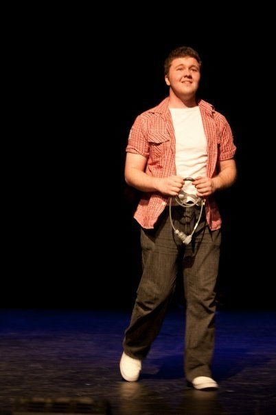

Outside of work
Two decades on stage, backstage and on the committee — most recently leading a community theatre organisation through the same pressures every volunteer-run group faces.
OSMaD is a completely volunteer-run community music theatre company that has been staging musicals in Melbourne for decades. I've been on the committee since 2019, and held the Treasurer and President portfolios across that time.
| Role | Years |
|---|---|
| President | 2023 – 2025 |
| Treasurer | 2020, 2022 – 2023 |
| Production Manager | 2019 – 2022 |
| Committee Member | 2019 – present |
As President I invested in the volunteer experience against a stated risk, and volunteer numbers grew from roughly 70 to around 200. As Treasurer I held the full financial governance portfolio for a roughly $150k budget — financial statements, budgeting, AGM reporting, bank authorities, insurance and grant acquittals — for an incorporated association with no external auditor.
It's a smaller stage than a hospital network or a listed company, but the underlying problem is identical to the one I solve professionally: sustaining an organisation through declining volunteerism using process, technology, delegation and culture. Getting a group of people — most of them volunteers, all of them busy — pointed in the same direction, with enough structure that things don't fall over and enough trust that they don't have to be told twice.
I'm currently listed on the OSMaD committee page.
Seasons I've contributed to since joining OSMaD, on stage, backstage or on the committee. The full company history is on the OSMaD past shows page.
| Year | Production |
|---|---|
| 2026 | Titanic |
| 2025 | Come From Away |
| 2024 | The Addams Family |
| 2023 | The Hunchback of Notre Dame |
| 2022 | The Scarlet Pimpernel |
| 2021 | All Together Now! |
| 2019 | Miss Saigon |
| 2018 | Les Misérables |
| 2017 | Chess |
| 2016 | The Pajama Game |

On stage in an early production — the same instinct that runs a cyber team runs a cast: give people clarity, and let them perform.
| Year | Production | Role | Company |
|---|---|---|---|
| 2017 | The Wedding Singer | Featured EnsembleNominated for a Bruce Award for Best Cameo, as the Bum | OXAGEN Productions |
| 2015 | A Funny Thing Happened on the Way to the Forum | Senex | UMMTA |
| 2014 | O2 | Featured Ensemble | OXAGEN Productions |
| 2013 | Warped | Featured Ensemble | OXAGEN Productions |
| 2012 | Spamalot | Sir Dennis Galahad / EnsembleNominated for a Bruce Award for Best Supporting Actor | OXAGEN Productions |
| 2011 | Assassins | EnsembleNominated for a Bruce Award for Best Ensemble | UMMTA |
| 2008 | Into the Woods | Cinderella's Prince / The Wolf | Bendigo Youth Theatre |
| 2008 | The Little Mermaid | Sebastian's Voice (one performance) / Stage Manager | Sacred Heart College, Kyneton |
| 2007 | Into the Woods Junior | Rapunzel's Prince / The Wolf | Sacred Heart College, Kyneton |
The Bruce Awards are presented annually by the Music Theatre Guild of Victoria, recognising non-professional music theatre across the state.
Versatile baritone, D2 – A5. Some training in Bel Canto and Estill singing methods, substantial musical theatre vocal experience, and some operatic and choral experience. Extensive amateur experience with comic supporting roles and incidental characterisation. Minimal jazz and Broadway dance, incidental tap and ballet.